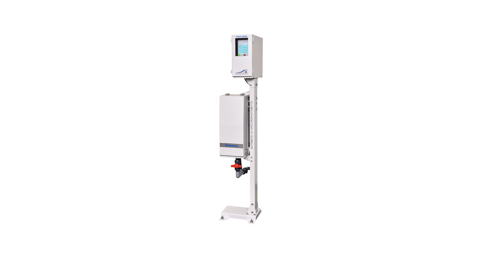

<main id="main">

    <!-- ======= Breadcrumbs ======= -->
    <!-- <div class="breadcrumbs d-flex align-items-center" style="background-image: url('assets/img/ieqms/3200.jpg');">
      <div class="container position-relative d-flex flex-column align-items-center" data-aos="fade">
  
        <h2>Products</h2>
        <ol>
          <li><a href="index.html">Home</a></li>
          <li>EQMS Products</li>
        </ol>
  
      </div>
    </div> -->
    <!-- End Breadcrumbs -->
    <!--  -->
  
    <section id="projects" class="projects">
      <div class="container" data-aos="fade-up">
  
            <div class="portfolio-isotope  " data-portfolio-filter="*" data-portfolio-layout="masonry" data-portfolio-sort="original-order">
  
  
  
              <div class="col-md-1">
                <table class="table portfolio-flters table-bordered">
                    <thead>
                        <tr>
                            <th><li data-filter="*" class="filter-active"style="font-size: large; ">EQMS</li></th>
                        </tr>
                    </thead>
                    <tbody>
                        <tr>
                            <td><li data-filter=".filter-yuv"style="font-size: large; ">YUV - 3200 Organic Pollution Monitor </li></td>
                        </tr>
                        <tr>
                            <td><li data-filter=".filter-toc"style="font-size: large; ">OnLine TOC-380D</li></td>
                        </tr>
                    </tbody>
                </table>
            </div>
            
              
      
              <div class="row gy-4 portfolio-container" id="two" data-aos="fade-up" data-aos-delay="200">
      
      
      
              
      
                <div class="col-md-12  portfolio-item filter-yuv">
                  <div class="card">
                  <div class="row">
                    <div class="col-md-4 d-flex align-items-center">
                      
                    </div>
                    <div class="col-md-8 d-flex align-items-center">
                      <div style="text-align:justify;  padding-right: 2%; padding-left:2%">
                        <h4>YUV-3200 Online BOD-COD-TSS-pH </h4>
                        <h6>YUV-3200-organic pollution Monitor is highly advanced  excels in a wide range of applications:</h6>
                        <p>YUV-3200 employs ultraviolet (UV) spectroscopy to analyze the organic pollution levels in the sample. Light from the light source is made to pass through the sample and attenuation of the light beam is recorded. Usample signal is the light absorbed from organic matter and Vsample signal is the light absorbed from turbidity. By subtracting both the signal values, amount of organic matter can be determined. COD, TSS values remain unaffected by Cell contamination and change in the intensity of light source due to the implementation of four path (Ureference, Vreference, Usample and Vsample) and two wavelength method(255nm and 660nm).</p>
                      </div>
                    </div>
                    <div class="col-md-12 d-flex justify-content-center">
                        <a [routerLink]="['/contact']" >
                            <button class="btn" style="border-radius: 20px; border-color: blueviolet ;  " >
                                Get Qoute
                            </button>
                        </a>
                      </div>
                  </div>
                </div>
                </div>
      
                <div class="col-md-12  portfolio-item filter-toc">
                  <div class="card">
                    <div class="row">
                      <div class="col-md-4 d-flex align-items-center">
                        
                      </div>
                      <div class="col-md-8 d-flex align-items-center">
                        <div style="text-align:justify;  padding-right: 2%; padding-left:2%">
                          <h4>380D Automatic OnLine TOC Analyzer</h4>
                          <p>There are various indicators set by the government for pollutants in wastewater discharged from factories and business establishments, and organic pollutants are considered to be an important item to monitor. In order to manage wastewater, not only constant monitoring at the final discharge outlet (downstream) is required, but also rapid measurement upstream of the wastewater treatment process is required from the perspective of avoiding the risk of outflow. TOC-380D is an instrument that uses combustion oxidation and infrared analysis, and can measure a wide range of concentrations from low to high at a minimum interval of about 6 minutes. Furthermore, since it has a correlation with the COD value by the specified measurement method, it is suitable for measuring various samples from constant monitoring to management of process water. In addition, various options are available to meet a wide range of user needs, and by combining with our unique technology, it realizes highly accurate long-term continuous measurement.</p>
                        </div>
                      </div>
                      <div class="col-md-12 d-flex justify-content-center">
                          <a [routerLink]="['/contact']" >
                              <button class="btn" style="border-radius: 20px; border-color: blueviolet ;  " >
                                  Get Qoute
                              </button>
                          </a>
                        </div>
                      </div>
                    </div>
                  </div>
      

      
              </div><!-- End Projects Container -->
      
            </div>
           
            
  
  
           
  
  
            
  
          
      </div>
    </section><!-- End Our Projects Section -->
  
  </main><!-- End #main -->